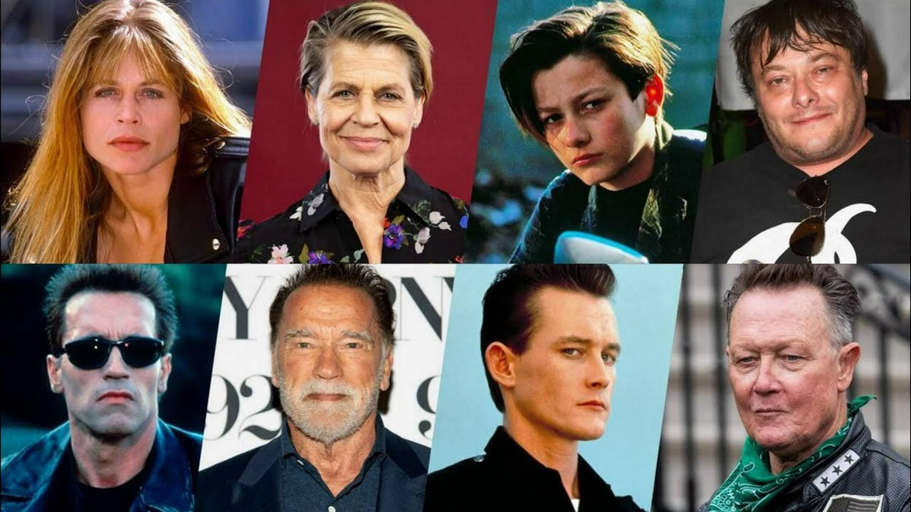

Reparto principal
Arnold Schwarzenegger como Terminator T-800: Un androide construido como un organismo sintético compuesto de tejido vivo sobre un endoesqueleto de «hipealeación» de titanio que es reprogramado y enviado al pasado para proteger a John Connor. Según los informes, Schwarzenegger recibió 15 millones USD por el papel.
Matt McColm hizo de su doble.
Linda Hamilton como Sarah Connor: Madre de John, el futuro líder de la «Resistencia humana» en la guerra contra Skynet. Hamilton repitió tras la anterior película por un salario de 1 millón USD. En su preparación, Hamilton se sometió a un extenso régimen de entrenamiento de trece semanas con el entrenador personal Anthony Cortes durante tres horas seis días a la semana antes de que comenzara la filmación. Además, perdió 5,4 kg con una dieta baja en grasas, que se llevó a cabo durante los seis meses de rodaje de la película. El actor y excomando israelí Uzi Gal le proporcionó entrenamiento para sus escenas de acción. Sobre su trabajo con Gal, Hamilton declaró que realizó «judo y entrenamiento militar de alta resistencia» y «cambiar cargadores, revisar una habitación al entrar, verificar asesinatos». La hermana gemela de Linda, Leslie Hamilton Gearren, también interpretó a Sarah cuando se requirió que hubiera dos personajes en la misma toma.
Robert Patrick como T-1000: Un terminador prototípico avanzado que cambia de forma y es enviado al pasado para asesinar a John. Cameron declaró que «quería encontrar a alguien que fuera un buen contraste con Arnold. Si la serie 800 es una especie de tanque Panzer humano, entonces la serie 1000 tenía que ser un Porsche».
Joe Morton como Miles Dyson: Ingeniero de Cyberdyne Systems, cuya investigación conducirá a la formación de Skynet. Según el propio Morton, Cameron le dio el papel tras una broma sobre su color de piel: «Entré y leí, y [Cameron] me pidió que esperara, y fui a leer de nuevo, y me dijo: “¿Por qué este personaje, por qué esta película era tan importante para mí?” Esto, a causa de una broma que Richard Pryor había contado. Y dijo: “¿Qué es eso?” Y Richard Pryor bromeó diciendo que la razón por la que los personajes negros se matan en películas o no están es porque Hollywood no piensa que estaré allí en el futuro. Cameron se rio y luego me dio el papel».
Earl Boen como Dr. Peter Silberman: Es el psiquiatra de Sarah. Boen repite el mismo personaje de la anterior película. El Dr. Silberman trata de convencer a Sarah de que el Terminator no es real, pero cuando presencia el T-1000 y el T-800 comienza a dudar de sí mismo.
Edward Furlong como John Connor: Es el hijo de diez años de Sarah. Recibió entrenamiento de supervivencia desde una edad temprana, pero es llevado a un hogar de crianza después de que su madre es internada. La directora de casting Mali Finn descubrió a Furlong mientras visitaba el Boys and Girls Club de Pasadena (California).[13] Furlong, que no tenía ambiciones de actuar en ese momento, declaró: «Me enamoré [de actuar], no era algo que planeé».
